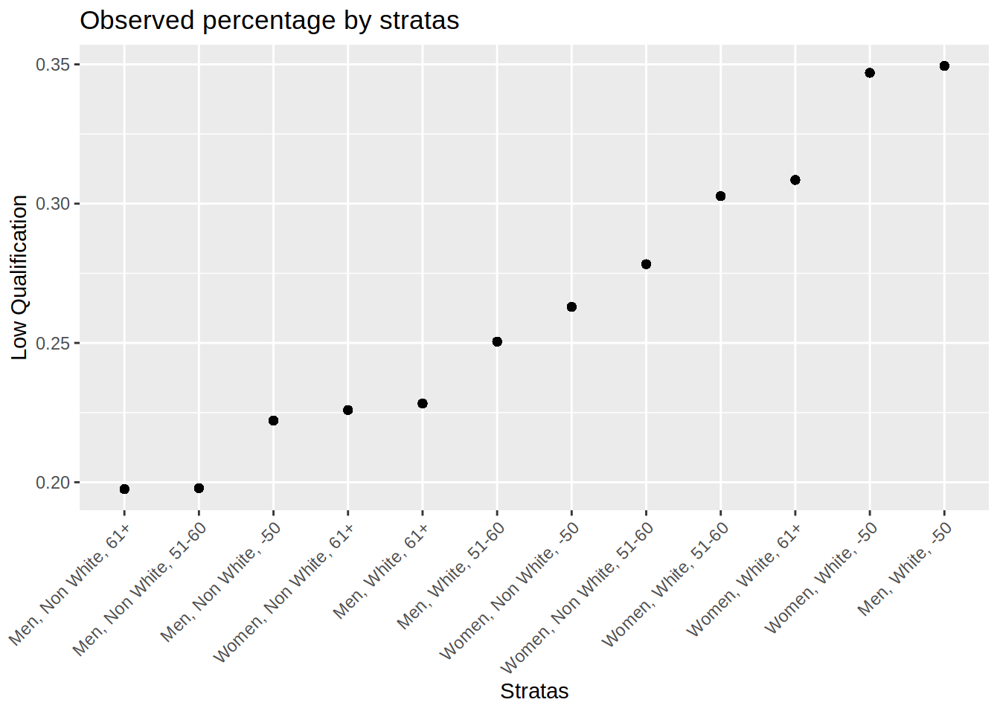

3 Multilevels models: Simple example - binary outcome
As a working example, we want to explore intersectional inequalities in qualification (a “late” intersectional strata) by early intersectional strata.
3.1 Description
We can start by describe the outcome by strata.
table1::table1(~ Sex + Age_class + Ethnicity | Qualification,
data=mydata,
overall=c(left="Total"),
caption="Description by qualification level")| Total (N=502461) |
Med-High Qualif. (N=356623) |
Low Qualif. (N=145838) |
|
|---|---|---|---|
| Sex | |||
| Women | 273354 (54.4%) | 187727 (52.6%) | 85627 (58.7%) |
| Men | 229107 (45.6%) | 168896 (47.4%) | 60211 (41.3%) |
| Age_class | |||
| -50 | 132145 (26.3%) | 87439 (24.5%) | 44706 (30.7%) |
| 51-60 | 177222 (35.3%) | 127965 (35.9%) | 49257 (33.8%) |
| 61+ | 193094 (38.4%) | 141219 (39.6%) | 51875 (35.6%) |
| Ethnicity | |||
| Non White | 27037 (5.4%) | 20621 (5.8%) | 6416 (4.4%) |
| White | 475424 (94.6%) | 336002 (94.2%) | 139422 (95.6%) |
mydata %>%
group_by(strata) %>%
mutate(tot = n()) %>% ungroup() %>%
group_by(strata,Qualification) %>%
mutate(value = n()/tot) %>%
filter(Qualification == "Low Qualif.") %>%
ggplot(aes(x = fct_reorder(strata,value,.fun='median'),
y =value)) +
geom_point() +
labs(x = "Stratas", y = "Low Qualification",
title = "Observed percentage by stratas") +
theme(axis.text.x = element_text(angle = 45, vjust=1, hjust=1))
3.2 The null model (only strata)
The null model allows us to estimate the IntraClass correlation (ICC), also known as the Variance Partition Coefficient (VPC), that is the part of the outcome variance that can be explained by the strata.
# multilevel model
m_null <- glmmTMB(Qualification ~ 1 + (1 | strata),
data = mydata,
family = binomial)
# intercept varies according to the stratum
sjPlot::plot_model(m_null, type = "diag")## $strata
Outputs of the models:
summary(m_null)## Family: binomial ( logit )
## Formula: Qualification ~ 1 + (1 | strata)
## Data: mydata
##
## AIC BIC logLik deviance df.resid
## 600465.6 600487.8 -300230.8 600461.6 502459
##
## Random effects:
##
## Conditional model:
## Groups Name Variance Std.Dev.
## strata (Intercept) 0.06779 0.2604
## Number of obs: 502461, groups: strata, 12
##
## Conditional model:
## Estimate Std. Error z value Pr(>|z|)
## (Intercept) -1.03793 0.07558 -13.73 <2e-16 ***
## ---
## Signif. codes: 0 '***' 0.001 '**' 0.01 '*' 0.05 '.' 0.1 ' ' 1# get the variances:
v_null <- get_variance(m_null)
# between stratas variance:
v_null$var.random## [1] 0.06778898# intraclass correlation
ICC_intersect <- round(icc(m_null)$ICC_unadjusted*100, 2)
ICC_intersect## [1] 2.02Plot of the predicted values by strata:
#plot
predictions <- predict_response(
m_null,
c("strata"),
type = "random")
predictions <- predictions %>%
arrange(predicted)
predictions$rown = rownames(predictions)
predictions$x_lab <- paste0(predictions$rown,".",predictions$x)
predictions$sex <- as.factor(ifelse(grepl("Men", predictions$x), "Men", "Women"))
predictions$ethnicity <- as.factor(ifelse(grepl("Non white", predictions$x), "Non white", "White"))
predictions$age <- as.factor(ifelse(grepl("61+", df$x), "61+",
ifelse(grepl("-50", df$x), "-50","51-60")))
print(predictions %>%
ggplot(aes(x=predicted, y=fct_reorder(x,predicted,.fun='median'),
color = sex, linetype = ethnicity))+
geom_point(size=3) +
geom_linerange(aes(xmin = conf.low, xmax = conf.high, size = age))+
labs( y = "Sratas",
x = "",
color = "Sex Category",
linetype = "Ethnicity",
size = "Age",
title = paste("Predicted values for having a low qualification"))+
theme(axis.title = element_text(size = 10),
axis.text=element_text(size=10)))+
scale_size_discrete(range = c(0.5, 1.5))

3.3 The variance change
To calculate the (additive) contribution of each category to the total variance, we can estimate the variance change when adjusting for this category. The Proportional Variance Change (PVC) when adjusting for all categories is the portion of ICC/VPC explained by additive effect. Therefore 100% - PVC is the part explained by an intersectional effect .
# models where we add each category one by one
m_gender <- glmmTMB(Qualification ~ Sex + (1 | strata), data = mydata, family=binomial)
m_ethnicity <- glmmTMB(Qualification ~ Ethnicity + (1 | strata), data = mydata, family=binomial)
m_age <- glmmTMB(Qualification ~ Age_class + (1 | strata), data = mydata, family=binomial)
m_full <- glmmTMB(Qualification ~ Age_class + Ethnicity + Sex + (1 | strata), data = mydata, family=binomial)
v_gender <- get_variance(m_gender)
v_ethnicity <- get_variance(m_ethnicity)
v_age <- get_variance(m_age)
v_full <- get_variance(m_full)
prop_gender <- round(((v_null$var.random - v_gender$var.random) / v_null$var.random)*100,2)
prop_gender <- ifelse(is.null(prop_gender), 0, prop_gender)
prop_ethnicity <- round(((v_null$var.random - v_ethnicity$var.random) / v_null$var.random)*100,2)
prop_ethnicity <- ifelse(is.null(prop_ethnicity), 0, prop_ethnicity)
prop_age <- round(((v_null$var.random - v_age$var.random) / v_null$var.random)*100,2)
prop_age <- ifelse(is.null(prop_age), 0, prop_age)
prop_full <- round(((v_null$var.random - v_full$var.random) / v_null$var.random)*100,2)
prop_full <- ifelse(is.null(prop_full), 100, prop_full)
prop_intersection <- round(100 - prop_full,2)
print(
as.data.frame(
cbind(
parameters = c("ICC/VPC", "% Sex category", "% Age/generation", "% Ethnicity", "%Intersection"),
values = c(ICC_intersect,prop_gender, prop_age, prop_ethnicity,prop_intersection )
)))## parameters values
## 1 ICC/VPC 2.02
## 2 % Sex category 22.9
## 3 % Age/generation 19.84
## 4 % Ethnicity 42.77
## 5 %Intersection 14.29